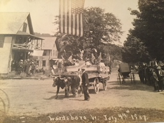

Wardsboro 4th of July Parade & Street Fair
Southern Vermont's Oldest Independence Day Celebration
Wednesday, July 4, 2018 - Festivities begin at 9 AM
Schedule of Events
9 AM: Street Fair opens all along both sides of Main Street with more than 50 vendors
10 AM: Start of the parade. Initiated with the ringing of the Church Bell and Invocation by Pastor Pete Carlson.
The parade starts by the bridge, proceeds south on Rte. 100 and then turns by the Wardsboro Country Store and heads down Main Street past the reviewing stand at Town Hall before turning around and following the same route in reverse.
Where Do We Park?
Parking is in designated lots within a few hundred yards of the parade route. Lots can be found on Rte. 100 by the Wardsboro School, by MacMichael Park, south of town on Rte. 100, and on South Wardsboro Rd. past the town dump.

Parking is a $4 donation per car.
Special 4th of July Raffle
There will be 4 drawings of a one-day unrestricted Adult Lift Ticket at Mount Snow for the 2018/2019 season ($100 value). Four chances to win - $5 each or $20 for 5. Drawing at 2 PM. You do not have to be present to win.


Fill out completely and mail them along with your check made out to 4th of July Committee, P O Box 248, West Wardsboro, VT 05360.
Tickets are also available at Cindy’s Bittersweet Memories Café.
Wardsboro 69th Annual 4th of July Street Fair and Parade.
(as appears in the July 2018 edition of the Bucketville News)
By 4th of July Committee
Downtown Wardsboro doesn’t look the same as this 1907 postcard but it still has that old fashioned feel with the 69th Annual 4th of July Parade and Street Fair still happening here since 1949. Make your plans to come to Wardsboro on the 4th and enjoy all that there is to offer at the best and longest running Independence Day celebration ever.
The street fair opens at 9 am. Over 40 local and creative vendors will line Main Street with their wares ranging from everything imaginable to the unimaginable! – Soaps, Hand knits, Pottery, Jewelry, Wood Carvings, Clocks just to name a few.
Get there early for the luscious homemade strawberry shortcake, which will be served from the church vestry or for hamburgers, hotdogs, fries which will be hot off the grill right outside Town Hall. Pop inside Town Hall to purchase pies of every filling all made by local pie makers. The bake sale will be brimming with goodies also homemade by locals. Coffee and donuts will be served and sold from the rolling cart up and down Main Street. The White Elephant Sale will be situated on in front of the garage next to the library and will offer many choice items.
The parade will begin as usual at 10 am after the church bell rings and our national anthem is sung. Amazing original and ingenious floats, walkers, and vintage cars plus fire trucks from Wardsboro and other local towns will pass by the reviewing stands and turn around to receive their awards from the judges.
Cool off with some ice cream, which can be found near the children’s Games. The Boy Scouts are running the Children’s games as a fundraiser - so be sure to support them!
Barbequed chicken with all the fixins’ will be served at 11 AM near Town Hall. Don’t miss the display of new and vintage quilts and which can be found in the Methodist Church.
The Library Trustees annual book sale takes place all day on the library lawn. Their Duck Race in the West River will begin at 2PM.
The History House will be focusing on the history of the Wardsboro Volunteer Fire Department, which started in 1936.
Marvin Bentley, Ida Mae Specker and Jimmy Knapp’s Green Mountain Ridge Runners will provide music throughout the day.
The Friends of the Wardsboro Library will be selling art and collectibles as well as raffle tickets for their “Best Ever Raffle” of a beautiful Handcrafted Rock Maple Side Table.
Speaking of raffles, don’t miss this one! There will be 4 drawings of a one-day $100 Adult Lift Ticket at Mount Snow for the 2018/2019 season. Four chances to win $5 each or $20 for 5. Print your tickets in advance by visiting the 4thofJulyWardsboro.com.
Regular and handicapped parking at $4.00 per car will be available in 7 marked areas. A shuttle bus service will bring you to Main Street from the lower North parking lot on Route 100. Main Street will be closed to traffic from 9:45 to 1 PM.
Volunteers for set-up, clean-up, parking, cashiers, baking, prepping strawberries, trash pick-up, pie making, and servers are always needed to help out before during and after this great day! Please say yes if you are called upon even if it is only for an hour of your time. Feel free to call Lee Miller, Volunteer chair (896-6080) to offer help. For more information, call Event chair Katryna Fitzpatrick (896-1047).
Every little bit will help this grand community event be successful, which is sponsored by the Wardsboro Yoked Parish. All proceeds benefit those in need throughout the community.
Activities
- Kids' Games - Hi-Striker, Face Painting outside the Town Office on Main Street
- Duck Race - follow the signs down to the water
- Quilt Show - at the Methodist Church on Main Street
- Library Book Sale - on the lawn at the Library at 170 Main Street - More Information.
- History Exhibit - in the History House on Route 100
- Fishing Derby
- Bean Bag Toss
- Dunk Tank
- Basketball Shooting Contest
- Skate Jam
An official one-page Schedule of Events will be available at various stations along the parade route. Also, the Master of Ceremonies will be keeping guests informed of events via the public address system. The Grafton Band and The Bills Band will be in the parade and there will be music throughout the day (incl. by a local fiddler)
Food Options at the Wardsboro 4th of July Parade & Street Fair
Coffee and Donut Cart
along Main Street starting at 8:30AM
Strawberry Shortcake
next to the Methodist Church on Main Street starting at 9:00AM
Bake Sale and Homemade Pies
inside Town Hall on Main Street. Pies starting at 9:00AM
BBQ Chicken, Salads & Sides
outside near Town Hall on Main Street starting at 11:00AM
Hamburgers, Hot Dogs & Fries
outside near Town Hall on Main Street starting at 11:00AM

Parade Route
The parade starts by the bridge, proceeds south on Rte. 100 and then turns by the Wardsboro Country Store and heads down Main Street before turning around and following the same route in reverse. The Street Fair is along Main Street on both sides. Listen for the ringing of the Church Bell that signals the start of the parade at 10 a.m. Ribbons for the parade floats and participants are awarded on the return trip so stay to see who this year's winners will be.
Our Story
The Street Fair & Parade evolved from a need to raise funds for the Yoked Parish. A few farsighted souls came up with the idea of a simple street fair with a novelty booth, handicraft booth, games for kids, homemade sandwiches, pie slices, and a little parade with a few floats and kids on bikes. The community began to be involved more and more because it was so much fun. The Wardsboro Yoked Parish runs the parade and most of the proceeds go to help community members in need.
Volunteering And Donating
Helping out at the 4th of July Street Fair & Parade has become a tradition in Wardsboro. It is part of the fun of offering entertainment and good food to several thousand visitors. To volunteer before, during or after the event, send an email to wardsboroparade@gmail.com
Ways to Help Out
Please consider entering the parade! For details on joining the line-up, email us. Great fun for antique or vintage car buffs, equestrians, musicians, Scouts, kid's' clubs and groups, performers, anyone with a big patriotic spirit!
Be a Vendor - spaces are limited for crafters, artists, and others, so please contact us as soon as possible at wardsboroparade@gmail.com. A new 2018 vendor application will be posted soon!
To display a new or vintage quilt in the quilt show, email us at wardsboroparade@gmail.com
To donate used books in good condition for the Library's book sale, contact the Library at 802 896.6988. Please do not leave books outside on the porch!
Contact Us
For questions regarding the parade please email us at wardsboroparade@gmail.com
Follow the Parade on our Facebook Page!